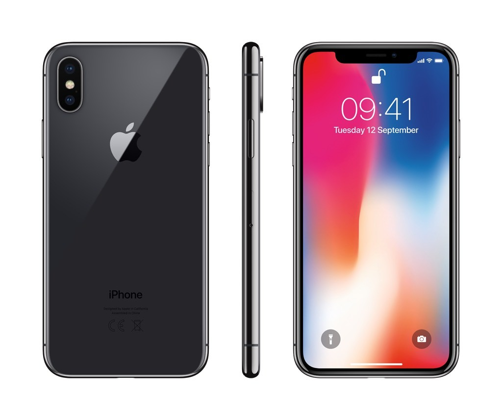
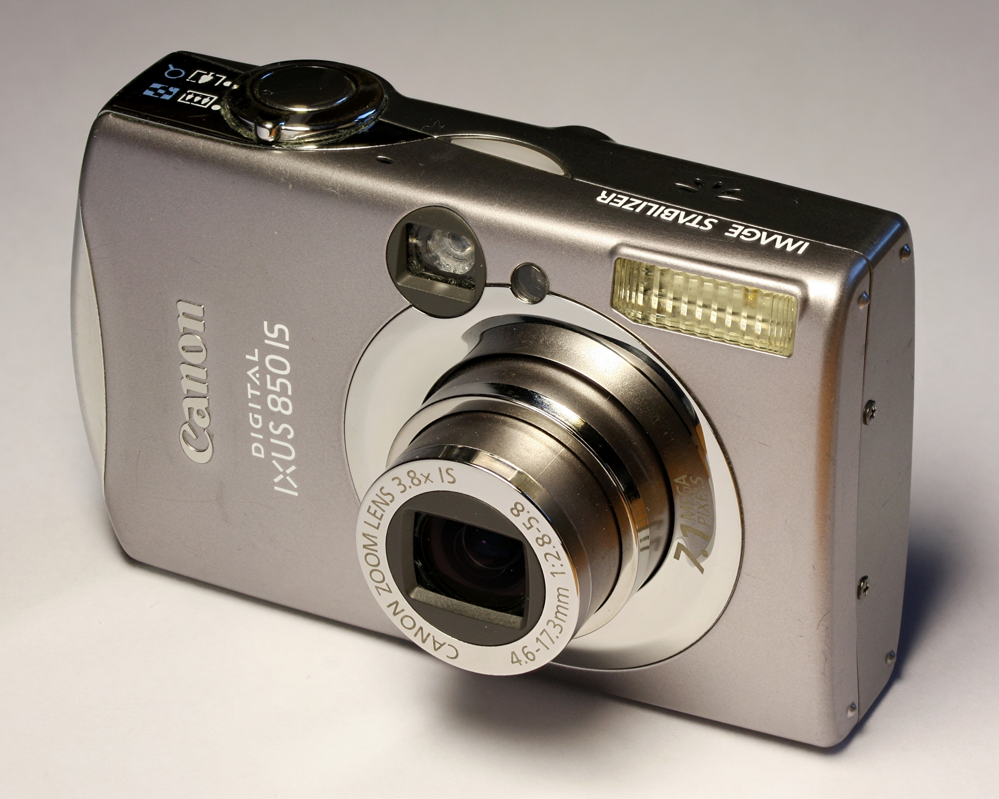
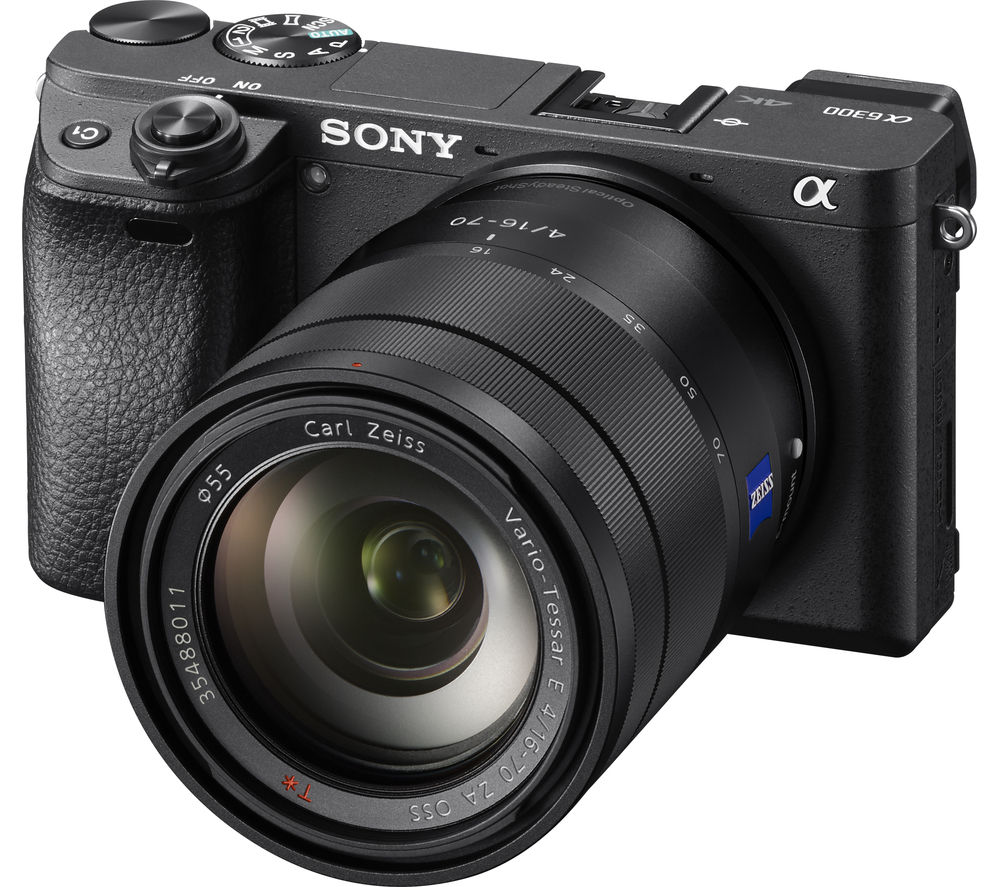

Types of Cameras!
Smartphone Camera
Some say that the best camera is the one you have with you, and by this definition there is no beating today’s smartphone cameras. Smartphone cameras have rapidly improved year after year and show no signs of slowing down. They’re feature rich, boasting 4k video and 16 bit file formats, which are features not seen on many dedicated cameras. However, this impressive package is hampered by a small image sensor which means that the fidelity and quality of the photos will not compare to most dedicated cameras. Also, most smart phones do not feature a switchable lens system (at least out of the box), so photographers are more limited in their photos.
Point and Shoot Cameraa
Convenient and dedicated to a single purpose, a standard point and shoot camera definitely has a purpose for many people today. Despite point and shoots sales dropping significantly in recent years, they still hold a purpose for anyone who wants a simple camera experience, in a small, complete package, and on a budget. Point and shoots have significantly larger sensors than smartphones and generally come with one variable focal length lens.These two features allow for much more diversity and quality in photos than a smartphone camera. However, they simply do not compare to the control and photo quality of a DSLR or Mirrorless Camera.
DSLR and Mirrorless Camera
If you’re serious about photography, there's no question that your real choice is between a DSLR and Mirrorless Cameras. DSLR and Mirrorless cameras produce the best images due to their larger image sensor and changeable lens system. However, even within this category, there are many sensor sizes and competing systems for lens mounts. This variability leads to more difficult purchasing decisions that depend significantly on the purpose and types of projects that the camera will be used for. Generally speaking, DSLR and Mirrorless cameras produce the highest fidelity and highest quality images evident in the beautiful images these cameras produce. They can be demanding to use so I would recommend that anyone who buys a Mirrorless or DSLR camera find tutorials by Tony Northurp on how to operate and use the menus. These tutorials are usually free on YouTube and are a great introduction to your new camera.
The difference between Mirrorless and DSLR cameras is the presence of a mirror in the camera. DSLR cameras posses a mirror inside that reflects the light coming from the lens into a optical viewfinder, or moves out of the way, allowing light to hit the photosensor. Conversely, Mirrorless cameras always have light hitting the photosensor and then have an electronic viewfinder that simulates the optical one. DSLR cameras have been around for generations, and have truly stood the test of time, however and much larger than mirrorless cameras. Mirrorless cameras give a very comparable image quality, and the electronic viewfinder has many features that give them an edge over DSLRs. The best example of the benefit of an electronic viewfinder is the focus coloring function which shows the photographer what part of the image is currently in focus by coloring it red or yellow. Mirrorless cameras tend to work better with adapted lenses, but have fewer native lenses as a newer product. Overall both have their benefits, and it really comes down to a matter of preference.